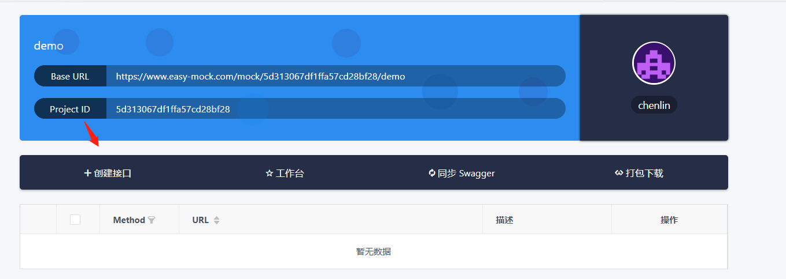

原文出处:本文由博客园博主龙猫大侠客提供。
原文连接:https://www.cnblogs.com/longmaodaxia/p/11211991.html
原文连接:https://www.cnblogs.com/longmaodaxia/p/11211991.html
进入easymock官网界面:https://www.easy-mock.com/
如果没有注册过的小伙伴，点击右上角的登陆，不用注册，登陆即可注册
登陆成功后，点击右下角的加号，添加项目
根据提示，创建项目
然后回到主页，会出现demo的项目
进入demo项目，然后点击创建接口

写入伪json数据，填写url地址，并创建
回到项目中，点击预览
复制上述地址

使用postman来call这个url,成功返回伪json数据